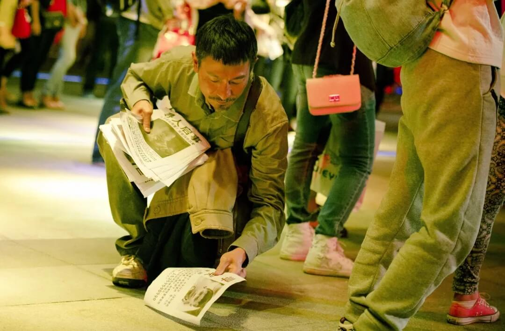
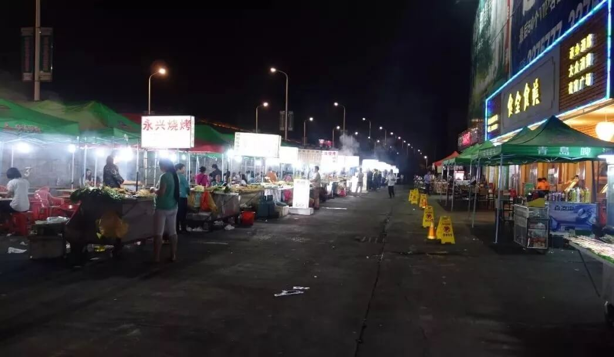
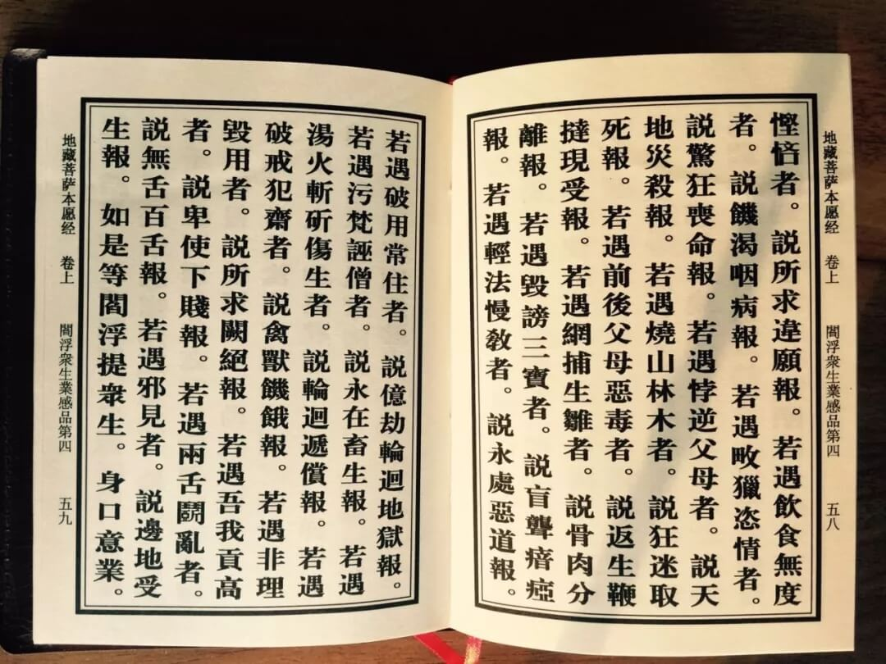
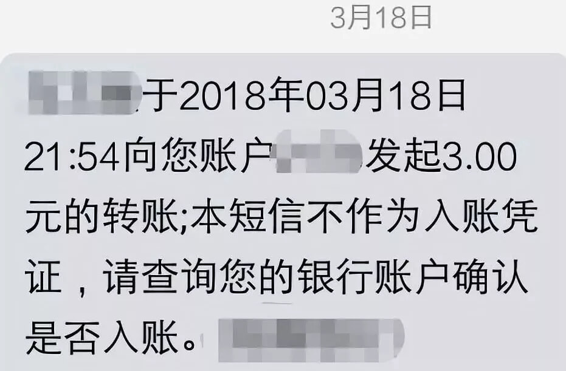
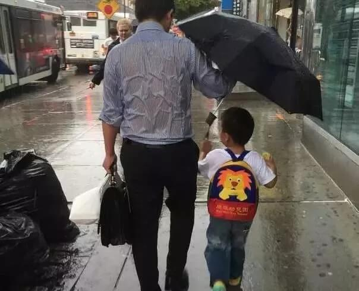

一、这是一个穿越的故事
让我们一起穿越到10年前——2008奥运年。就在万众瞩目国人热血沸腾的8月，有一个5岁的孩子被人贩子拐卖了。
盛夏的午后，奶奶带着孙子去家附近的一个小超市买东西，小朋友象往常一样拿了一个冷饮在超市外边吃边等奶奶买完东西出来。
但奶奶买完东西出来却再也没有看到孙子，只有地上一摊融化了的冰淇淋……
奶奶的心突突地快跳出胸口，喊到喉咙嘶哑也没有回声，好心人帮忙报案后在监控摄像头看到两个男人挟裹着天真烂漫的孩子上了路边一辆套牌面包车，奶奶旋即晕倒。
从孩子丢了这一刻开始，全家就被困在无间地狱里辗转哀号，不得出离，分分秒秒无时不刻沉浸在锥心刺骨的痛苦焦虑心碎绝望中，奶奶内疚自责一病不起，孩子妈妈以泪洗面夜不能寐，孩子爸爸也陷入前所未有的崩溃边缘。
一个昨天还载满欢声笑语美满幸福的家庭，一夜之间骨肉分离，坠入绝望的深渊。
二、这是一个超越的故事
这是一个超越的故事，这位陷在地狱里饱受煎熬的父亲没有放弃，他用尽一切办法寻找爱子。
从配合警方展开地毯式搜索，到发动亲戚朋友同学同事在火车站汽车站一个一个线索去寻找希望。当每一个希望都象美丽的肥皂泡一样幻灭后，他背着老母亲和妻子默默流泪，独自承受，擦干眼泪还要安慰她们，希望就在眼前，说不定明天就找到了。
周围有好心人劝他随缘，其实是劝他放弃，就怕他费尽财力精力最后空手而归。
这位父亲坚定地说只要口袋里还有一块钱，身上还有一分力气不倒下去，我就不会放弃。

时间滴滴答答地随着钟表流逝，对孩子的爸爸来说，随着每一个嘀嗒声流逝的，都是希望，都是亲人对团圆的渴求，都是孩子的生命和小小身体的每一个器官肢体的安全完整……
最怕是晚上，刚闭上眼睛睡着就看到孩子满面泪痕污垢，张开双臂扑向他，嘶喊：爸爸，我要回家！
睁开眼睛才知是梦一场……
这个爸爸说孩子2岁起，睡前要大人陪他读童书讲故事，为了偷懒躲活，他和孩子妈妈剪刀石头布的时候总出老千。午夜梦回往昔一幕幕，这个刚强的汉子难过愧疚到泪满枕头，他发誓孩子回家后一定每晚陪他读童书，亲手拍哄他睡觉，守护他的每一个黑夜。
只要他回家！
三、这是一个光穿透伤口缝隙照耀生命的故事
作为家庭顶梁柱，孩子爸爸安顿好家人，辞去工作，专职找孩子。
因缘际会，他找到“当下自在”老师，那时的当下自在20左右，看起来比实际年龄还要小一些，面对眼前这个看起来比丢失的儿子大不了多少的少年，孩子爸爸不是没有疑虑，但面前少年让他无名的信任，他是一根救命稻草，哪怕这根稻草和之前许多次一样，最终变成一个肥皂泡，他也不想放弃。
两个人一起在大排档吃面，初次见面，所有交流不过是一顿面的光景，还不到一小时。
当下自在听完这位父亲的叙述，良久没有发声，末了说，孩子会回来的。

只此一句，让这位七尺男儿以手掩面，泪水从指缝不断滑落至面碗。这句话里是希望，是鼓舞，是悲悯，是信心，是无与伦比的力量，任何一个濒临绝境的人都需要这样的加持，那是一道光穿透伤口的缝隙，点亮生命里的一盏灯火，带来希冀和企盼。
人活着就是凭一口气，点一盏希望之灯，守望着全家老小整整齐齐，团团圆圆。
当下自在沉默片刻又说，可以去徐州下面的XX乡镇找找。
孩子爸爸放下碗筷就奔赴徐州，在那个乡镇印刷张贴大量寻子启事。

四、这是一个勇敢奔跑的故事
孩子确实是被人贩子拐走的，几经周转来到一处徐州下面一个乡镇。从拐走那刻起，8月的酷暑高温，灭绝人性的人贩子为避免孩子反抗，更为了避免引发周围人的注意，只给孩子水和少量的食物。
在人贩子出去的时候，这个勇敢机智又富有福报的孩子发现关押他的小屋门忘记锁了，于是上演了一出真实的“逃出生天”的反转剧情。
话说孩子从关押他的简陋小屋里逃出来以后一直奔跑，一口气跑到人多地方开始流浪，他走到一个杂货店里讨水和面包，善良的女店主见他面生，一边给他吃喝，一边耐心地询问他具体情况，发现这个孩子口音不同，也说不清楚自己家到底在哪里，就果断打报警电话。
就在这个小镇的派出所，爸爸和孩子久别重逢，和他梦中的几乎一模一样，孩子张开双臂扑向他，哭喊：爸爸，我要回家！
五、这是一个信仰和皈依的故事
每年被拐卖的孩子约20万，被寻回的只有0.1%。因此我们说这是一个超越的故事，一位父亲以势不可挡的勇猛和血浓于水的爱超越了千山万水和一切障碍挫折，寻回了亲生孩子。
这更是一个与信仰有关的皈依的故事。
这位父亲在寻找孩子的途中，见到寺庙就进去虔诚礼佛叩首，痛哭流涕。他已经不记得自己去过多少寺庙，礼拜过多少佛菩萨。

那时的他并不是佛教徒，但他至诚恳切地跪在佛前，一遍遍地忏悔自己有生以来造下的所有恶业，祈求所有业报都报在自己身上，他边求边叩头边哭：祸不及子孙！佛祖保佑我找回孩子，我愿意减少自己的寿命换全家团圆，换老人不再受自责折磨；换爱人不再以泪洗面；换儿子平平安安回到身边……
那天寺庙的师父在一旁听完他的哭求，慈悲地递给他一本《地藏经》让他有空念诵。他随手一翻就翻到“网捕生雏者，说骨肉分离报”，顿时浑身如被电击，抖如糠筛……
他就此皈依三宝，受持五戒。
六、这是一道“是”与“否”的选择题
这位父亲带着孩子和20万元酬金来面谢当下自在老师。当下自在没有接受，他说我什么也没有做。
孩子爸爸说是你告诉我去某地寻找，是你告诉我孩子会找到的！
当下自在很认真地告诉孩子爸爸，这是一个“是”与“否”的选择题，你听完我的建议后选择了“是”，是你自己的选择和努力造就了这个团圆的结果。
孩子爸爸不解。
当下自在继续道，很多人认为选择“是”与“否”只是“一念之间”，一念善，一念恶，一念是，一念否。你知道是什么最终主导了你的这一念，令你选择“是”，选择去相信一个初次见面的陌生年轻人的话，并且毫不犹豫地去照做？
孩子爸爸摇头。
当下自在说，这“一念之间”究竟意味着什么，转一念有多难呢？释迦摩尼佛的教化钟鼓响了两千年，菩萨遍布在婆娑世界，仍然有那么多的人在无明和觉醒之中选择信任“无明”。
即便身在寺院诵经的梵呗中，也只是一个多情的游客，他们来了又走，川流不息。
有多少人能够在一念之间超越自相续和揣测选择毫无保留的接受呢？缘起的成熟从来都没有停止过，那些选择走出自相续的人从来都在超越的建立中。
我只是站在你业力成熟的这颗大树下，轻轻地对你说了一句话。由于自相续太过喧闹，很多人“听”不到这句话，而你“听”到了，这就是你选择“是”以及愿望成真的真正原因，这个 “是”是你累世积累的福报和结下无数善缘的结果。
孩子爸爸突然感悟落泪，这次落泪和爱子走失时落下的泪不一样，和在寺庙忏悔许愿时痛哭流涕落下的泪不一样，它是觉醒的泪，带来的是心灵的一次彻底洗礼，震撼而欢欣。
七、这是一个关于感恩的故事
那次见面，孩子爸爸问当下自在老师该如何修行。
当下自在说，去践行慈悲和利他吧，专注下去不要走开。永远处在和菩萨最近的地方，保持一生的虔诚，这就是修行。
当下自在说，你要记住，你所积累的福报和善良，都将成为未来超越命运投射的勇气和资粮。
听完这句话，孩子爸爸更加坚持要代表全家老小供养眼前的恩人，他恳求当下自在给他的爱子一个积累福报的机会。当下自在让他参与了那一年组织的扶贫救助公益行动，孩子爸爸在那次公益行动里付出许多。
公益行动结束以后，他每天给当下自在的银行账户（公益活动得到的）转款三块钱。
他发信息给当下自在：老师，您救了我孩子的命，也救了全家人的命，虽然拒绝了我的20万，但是我仍然想报答和感恩。自此以后我每天供养您三碗米粥，无论在任何情况下您都不会有生命的顾虑。

从2008年延续到2018年5月，这次供养延续了10年。十年来，无论刮风下雨，这三碗米粥从来没有停止过。
10年变迁，如今孩子爸爸身上散发着善良稳重宽厚温暖的在家居士气质，这10年来他不忘初心一直践行慈悲和利他，为全天下骨肉分离的孩子祈福回向。
十年来孩子爸爸每晚手抄心经，和当年那个焦虑痛苦的父亲判若两人。
在修行的过程中，他找回了自己，找到了回家的路。他想把这十年来的心路和修行体悟供养给大家：
修行就是从“找儿子”到“找自己”的过程，当年所有人都认为找回儿子的概率太小了，几乎是不可能的。
我说，哪怕是不可能的，我也非得去找不可，因为那是我必须去做的，那是我的亲儿子，是我的亲娘，是我的妻子。

那时候的我24小时不想吃不想喝不想睡，蓬头垢面低三下四不考虑尊严，不在意生死，只想下一秒有他的消息。
实际上，因为下定决心去做这件事，所以“在路上”一点也不苦，相反，只有“在路上”可以让我获得心的宁静和安乐。除此之外没有任何人和任何方法可以让我得到这种体验。
这是一个真实的故事。

希阿荣博堪布：很多人并不知道，他们的一念善心，一丝善行，纵然微小，转瞬即逝，也必定在轮回的长夜中，在危险之际，为我们作明灯，作救护。
朋友，请保持你的慈悲和善良，用它做你所有选择的最终答案吧。